Bosch Parade 2026
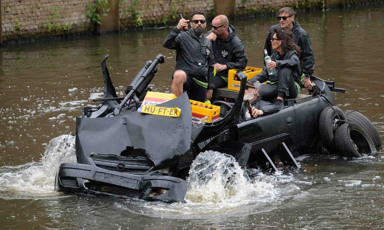
De elfde editie van de tweejaarlijkse varende parade op de Dommel in het hart van ’s-Hertogenbosch, in de geest van Jheronimus Bosch. Onder het thema Mankement als Motor maakten kunstenaars samen met communities uit de stad varende kunstwerken over gebreken, haperingen en wat daar toch uit voortkomt.
Als regisseur verbond Koen de afzonderlijke werken tot één voorstelling op het water: „We definiëren wat we vertellen, ordenen dáárop en bouwen zichtbaar dramaturgisch cement dat makers en publiek door één gezamenlijk verhaal leidt, zonder de autonomie van de werken te verstikken.”
Ruim 56.000 bezoekers zagen de parade; nog eens bijna 25.000 bezochten de Tuin der Lusten op de Citadel.
Credits
- regie
- Koen van Seuren
- curator
- David Bade
- muziek
- Nicoline Soeter
- libretto
- Joachim Robbrecht
- artistiek leider
- Erik de Jong
Speellijst
- 20 mei – 21 jun 2026 Tuin der Lusten, Citadel, ’s-Hertogenbosch
- 18–21 jun 2026 Bosch Parade, Dommel, ’s-Hertogenbosch
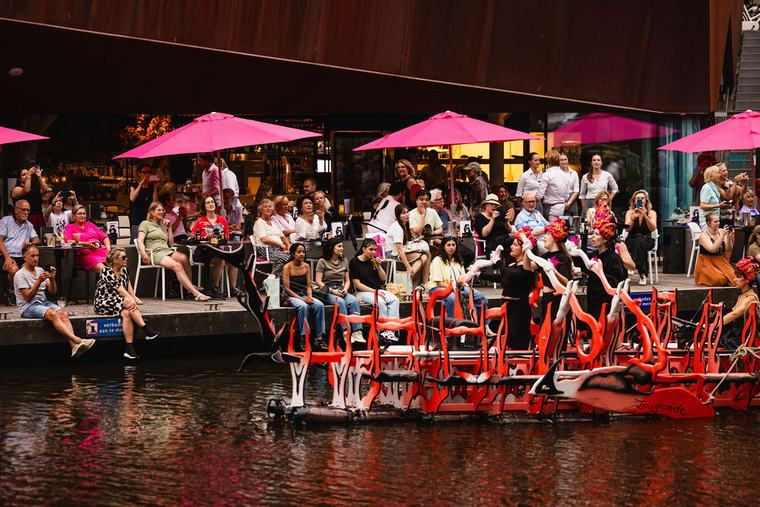
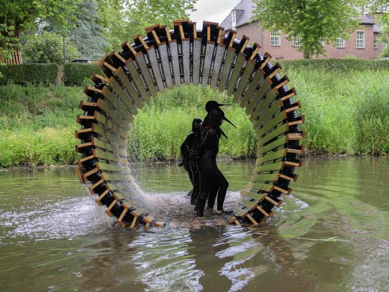
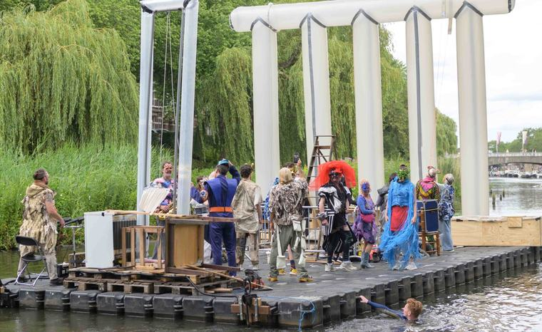
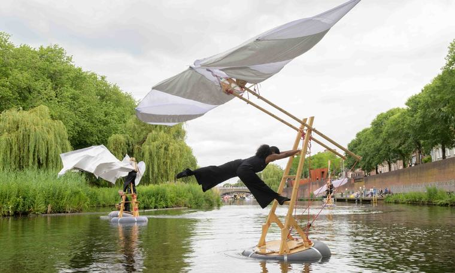
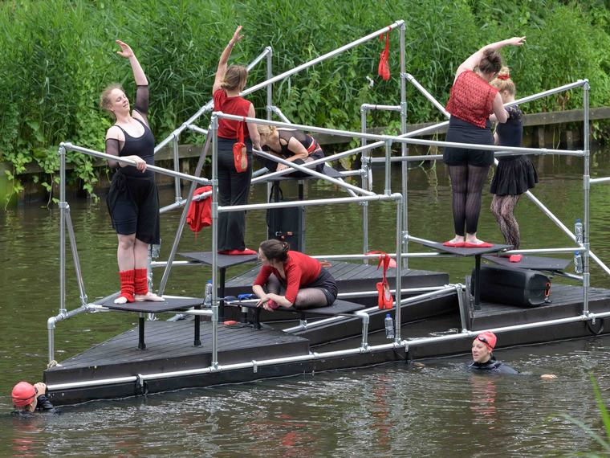
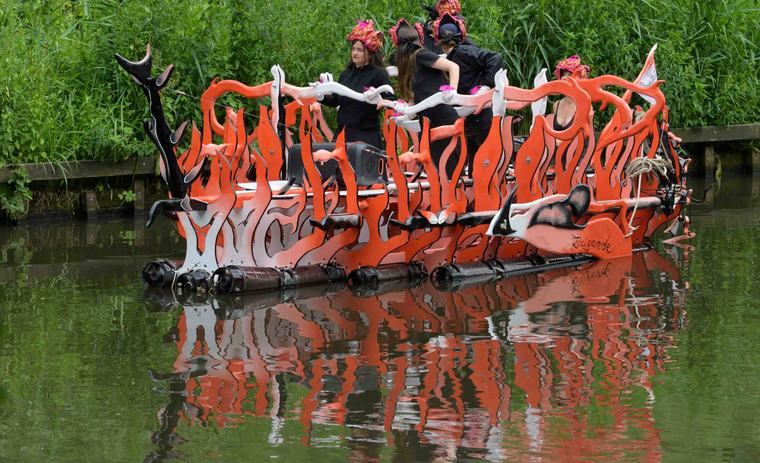
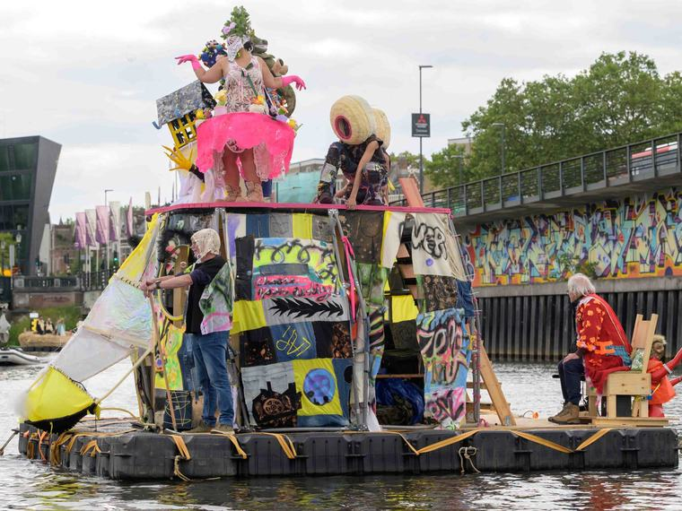
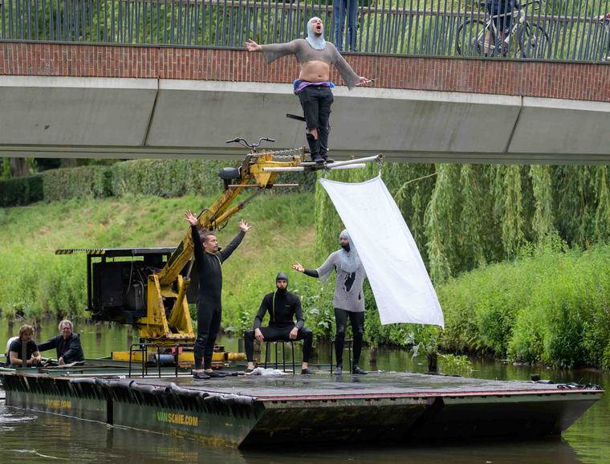
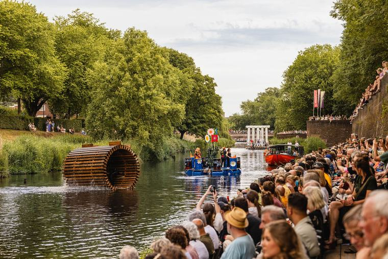
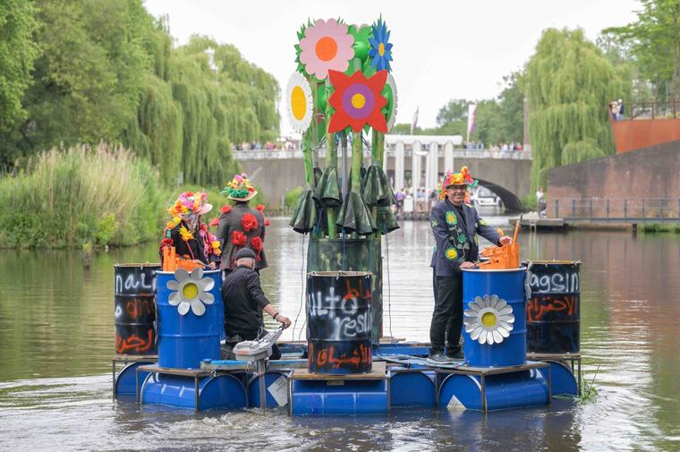
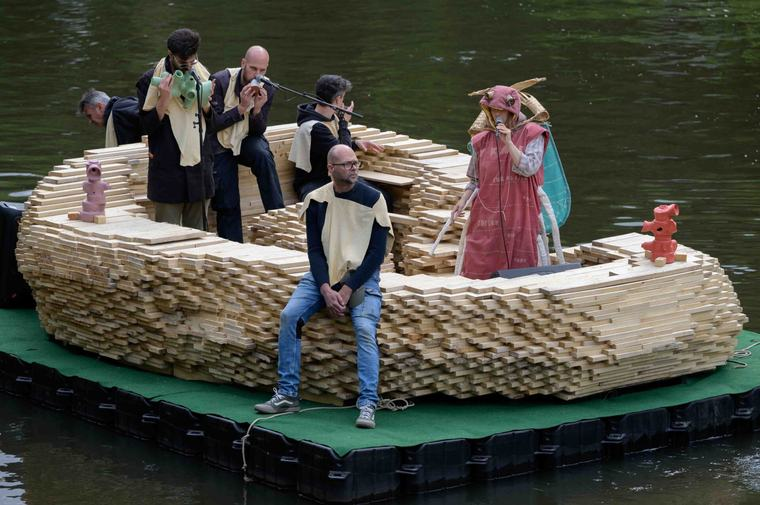
foto: Bosch Parade, Willeke Machiels